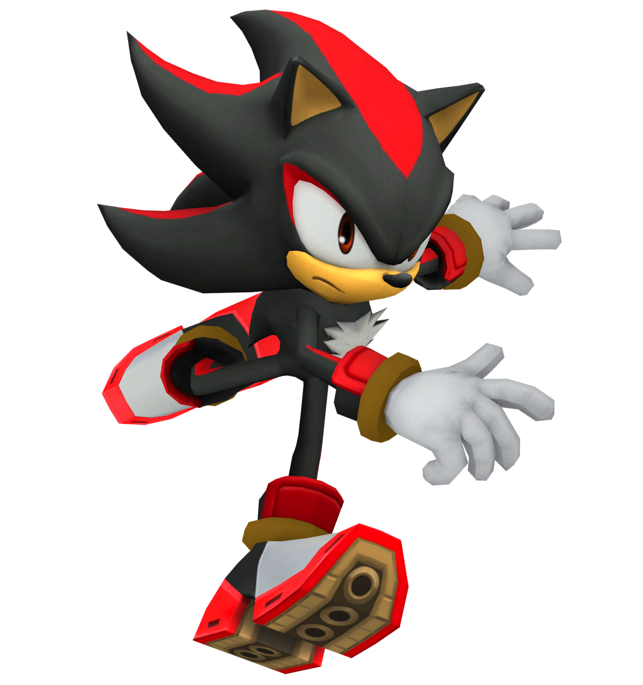
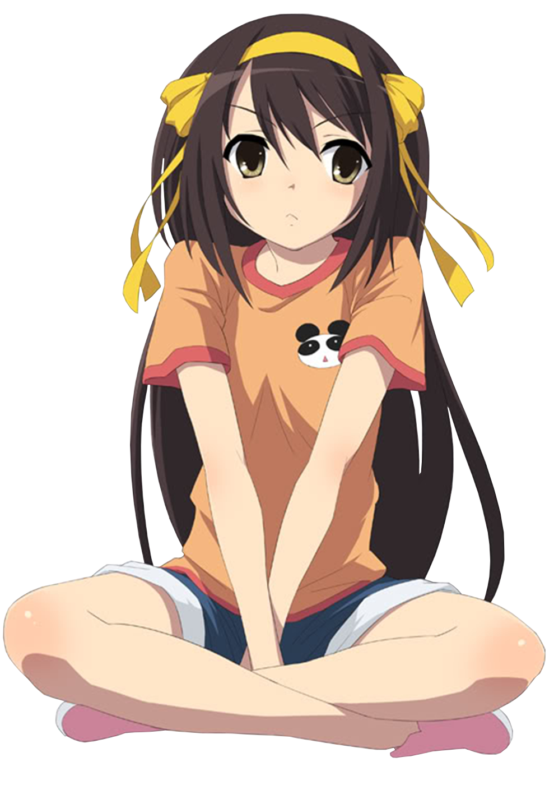
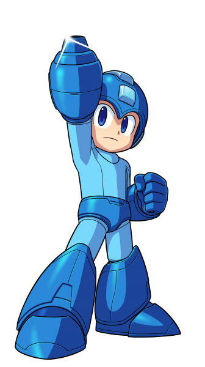
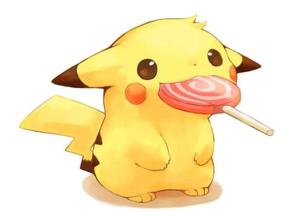

<!doctype html>
	<html lang="en">
	</html>
	<body background="images/Free-HD-Gif-Wallpapers.gif" width="1920" height="1600">
</body>
	  <head>
	    <meta charset="utf-8">
	    <title>Portfolio</title>
	  </head>
	  <body>
	  	
	  	<h1 style="color:blue;">Scratch: Genesis Sonic Engine</h1>
	<a href="https://scratch.mit.edu/projects/133563963/">

<p style="color:red;">A replicate engine of the classis sonic games! More like a test demo not a full game.</p>
</p>
	  	
	  	<h1 style="color:blue;">Repl.it: Time Travel Interactive Story</h1>
	<a href="https://repl.it/Dz3R/1">

<p style="color:red;">Travel through the eigth dimension as you experience different worlds!</p>
</p>
	  	
	  	<h1 style="color:blue;">Repl.it: Guess my Number game</h1>
	<a href="https://repl.it/ERFi/5">

<p style="color:red;">Guess my Number?</p>
</p>
	  </body>
	</html>
	
<h1 style="color:blue;">Scratch Project: Astro Boy Platformer</h1>
	  	<a href="https://scratch.mit.edu/projects/119435397/">
  
  <p style="color:red;">A scratch game that tries to replicate the old school platformers. Not complete so its really imperfect.</p>
</a>

<h1 style="color:blue;">Repl.it: Overwatch Halloween Interactive Story</h1>
	<a href="https://repl.it/EK9B/4">

<p style="color:red;">A story based on the game: Overwatch. This story takes place during Halloween on Eichenwalde, Germany where you take the role on two of the four heroes: Hanzo or Soldier 76. Your goal is to defend the castle walls from the evil Junkenstein from getting what he wants. You up for the challenge?</p>
</p>
